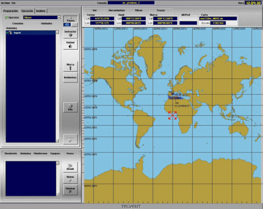
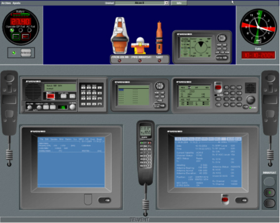

Introducción
En este Manual se detallan todas las funciones a las que el operador del puesto de Instructor puede acceder. La disponibilidad o no de cada una de estas funciones depende en cada caso de la configuración del Simulador.
Para los Instructores, esta aplicación se muestra en dos monitores:
|  |  |